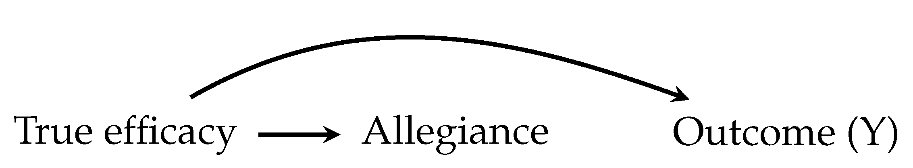
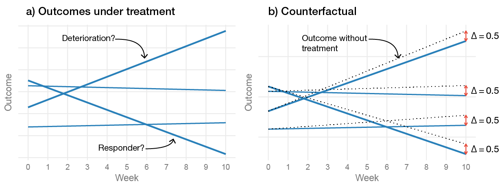

2 General Issues in Psychotherapy Research
“So why describe them again? Our response was that many in the field of psychotherapy research are not aware of these fundamental problems, and are very much internally oriented with little knowledge about major developments in the methodologies in the broader biomedical field.”
Cuijpers, Karyotaki, Reijnders, & Ebert (2018, p. 1)
Psychotherapy researchers have generally focused on three questions: what treatment works, for whom does it work, and how does it work? These questions go back to the strategic outcomes proposed by Paul (1967): “What treatment, by whom, is most effective for this individual with that specific problem, and under which set of circumstances?” (p. 112). In the remainder of this chapter, I will focus on these three questions and explore specific issues that are threats to the conclusions we draw from the literature.
2.1 How Well Do Treatments Work? Issues Estimating Treatment Effects
Claims that psychotherapies are efficacious for a wide range of problems are ubiquitous (Hofmann et al. 2012; Cuijpers, Cristea, et al. 2016). Some even argue that the evidence of efficacy and specificity are so strong that some psychotherapies are better called psychological treatments (Barlow 2004). In this section, I will cover different biases and flaws that are threats to the quality of the evidence. As noted by Leichsenring et al. (2017), although, biases are recognized in the literature, several important biases are not controlled for, and as stated by Cuijpers, Karyotaki, Reijnders, et al. (2018), psychotherapy researchers tend not to be aware of the fundamental problems.
2.1.1 Defining Treatment Effects
The psychotherapy literature is filled with reports that interchangeably use the terms: treatment outcome, treatment response, treatment effect, and outcome of treatment. Some authors use these terms when referring to the observed outcomes after treatment, and others when referring to the comparative difference between the outcomes in a control condition versus a treatment condition. Clearly, the outcome after treatment and the relative difference between the two groups are two different targets. Thus, before discussing specific biases, it is worthwhile to define what we mean by “treatment effects” and what trials try to estimate. In the causal inference literature, the treatment effect is often defined using potential outcomes (Rubin 1974). For a single patient that treatment effect is, \[ \Delta_i = Y_i(1) - Y_i(0). \] Here \(Y_i(1)\) represents the potential outcome if the patient enters treatment, and \(Y_i(0)\) the potential outcome if the patient decides to continue without treatment—representing the “what-if” scenario of what would have happened had the patient not decided to enter therapy. Thus, the causal effect is the relative efficacy of a treatment outcome compared to a counterfactual outcome. It should be evident that it is fundamentally impossible to observe this effect—we cannot simultaneously observe a patient’s outcome after treatment and the treatment-free outcome. This fact is called the fundamental problem of causal inference (Holland 1986; Rubin 1974).
Instead, the usual causal estimand, i.e. the target of efficacy studies, is the average treatment effect (ATE), which under random assigment can be shown to be equal to (Holland 1986), \[\begin{align*} \begin{split} \text{ATE} = \Delta &= \text{E}[ Y_i(1) - Y_i(0)] \\ &= \text{E}[Y_i(1)] - \text{E}[Y_i(0)] \\ &= \text{E}[Y_i(1) \mid Z_i = 1] - \text{E}[Y_i(0) \mid Z_i = 0] \\ &= \text{E}[Y_i \mid Z_i = 1] - \text{E}[Y_i \mid Z_i = 0], \end{split} \end{align*}\] where \(Z\) indicates the outcome of the random treatment allocation with \(Z = 0\) represents being assigned to the control condition and \(Z = 1\) being assigned to the treatment condition. This equation might look more complicated than it is. It simply tells us that we can estimate the average treatment effect in the population by comparing the average outcome in the treatment group to the average outcome in the control group. Thus, the often-criticized focus on group-level effects in RCTs is more caused by a necessity rather than an uninterest in the individual causal effects. Moreover, it does not follow that we must believe that the treatment effect is the same for all patients—it is still possible that individual-level treatment effects vary. However, we cannot directly observe those effects, so the ATE is our best guess what effect a treatment would have for a patient picked at random from the population. It is important to remember this “fundamental reality of causal analysis” (p. 14, Morgan and Winship 2014), because as we will see later, investigators frequently forget this and draw conclusions about individual-level effects that could never be observed.
However, the effect of randomization is not everlasting, and the effect is frequently broken in trials; participants can deviate from their assigned treatments, e.g., miss sessions, fail to complete homework assignments, or simply drop out from the treatment. For those reasons, most RCTs use the intention-to-treat (ITT) comparison, where participants are analyzed according to how they were randomized. The ITT comparison is different from the ATE in that we are now evaluating the impact of the random allocation, i.e., the impact of offering treatment (Hernán and Hernández-Díaz 2012). The ITT and ATE effects would be equivalent under perfect adherence and no dropout. Thus, from the point of view of trying to evaluate the efficacy of a treatment, psychotherapy trials could aptly be described as “broken trials” (Barnard et al. 2003), or as “longitudinal studies with baseline randomization” (Toh and Hernán 2008).
Some investigators recognize the limitations of the ITT comparison in relation to estimating the efficacy of a treatment. Unfortunately, they often perform a “naive” per-protocol analysis to estimate the effect among those who adhered to the treatment. However, adherence is not experimentally manipulated; hence, the sample in the per-protocol analysis will likely be partially self-selected and prone to time-varying confounding, and valid inference would require dealing with those issues (Hernán and Hernández-Díaz 2012; Dunn, Maracy, and Tomenson 2005; Mohammad Maracy and Graham Dunn 2011). Despite the challenges of estimating the causal effect among treatment completers, it is still worthwhile to remember that an ITT comparison might not be synonymous with efficacy in neither the mind of clinicians nor patients. Personally, either as a patient or a clinician, I would want to know the expected effect of an intervention if I actually complete it.
2.1.2 Comparators
There is an extensive disagreement regarding the choice of counterfactual in psychotherapy studies, i.e., the choice of the control condition. Trials investigating pharmacological therapies have the double-blind placebo RCT as the ideal—where the treatment effect is attributable to the active ingredients. For psychotherapy trials, the choice of comparison is not as straight-forward, and there is a large disagreement among researchers. The disagreement can be summarised as: should non-specific effects be included in the causal treatment effect? Some would define the treatment effect as the effect that is above and beyond the effect of having contact with a warm and empathic therapist, and try to control for most of the non-specific effects (Gold et al. 2017; Guidi et al. 2018), using some type of “psychotherapy placebo.” Proponents of the importance of common factors (non-specific) effects have called placebo controls in psychotherapy a flawed concept (Wampold, Frost, and Yulish 2016), see Section 2.2.1 on page for a background to the common factors theory. Much of the discussion is related to a difference in the view of what constitutes a treatment effect. From a common factors perspective it would be strange to try to control for the effect of the patient-therapist relation or expectation effects, and it would be conceptually hard to design an intervention where these are “placebo” components. Kirsch, Wampold, and Kelley (2016) writes: “in evaluating the efficacy of psychotherapy, the placebo effect cannot and should not be controlled” (p. 121), and Kirsch (2005) notes that “it is not clear how the effects of placebos are any less specific than any other psychologically produced effects.” (p. 797).
However, proponents of specific effects claim that most of the therapy works by targeting and modifying specific processes related to the psychopathology. Naturally, from this point-of-view, investigators claiming that non-specific effects are the principal treatment mechanism should control for non-specific effects (Mohr et al. 2009).
Most investigators probably agree that an inert psychotherapy placebo condition that can be blinded is challenging to construct, which has lead to a discussion about what the appropriate comparator should be. It is possible that these challenges were instrumental in the adoption of waitlist controls—a comparator that has received ample criticism (Cristea 2018). Several meta-analyses have provided evidence that a waitlist act as weak control condition (Khan et al. 2012; Huhn et al. 2014), with effects lower than expected by the natural course of spontaneous remission. This nocebo effect has been found in multiple meta-analyses (Furukawa et al. 2014; Khan et al. 2012; Cuijpers, Cristea, et al. 2016).
2.1.3 Biases, Was Eysenck Right?
There are multiple sources that could bias the estimates of treatment effects. Researchers’ allegiance to the studied psychotherapy has frequently been brought up as a risk (Luborsky et al. 1999). Munder et al. (2013) performed a meta-analysis of meta-analyses and found that the association between allegiance and outcome was, r = .262, p = .002. There are many plausible ways investigators’ allegiance could bias treatment effects (cf., Luborsky et al. 1999; Cuijpers and Cristea 2016; Coyne and Kok 2014), they could: 1) pick a weaker control condition, 2) avoid publishing negative findings, 3) selectively report outcomes favoring their preferred treatment, 4) compare various different statistical models and pick the one that gives the most favorable results, 5) be more enthusiastic toward their prefered treatment and create stronger expectations in participants assigned to it, 6) recruit more competent therapists providing the preferred treatment, and 7) they can pick outcomes more responsive to their intervention. Naturally, these questionable practices need not be consciously performed by the investigator. Moreover, as Leykin and DeRubeis (2009) noted, the allegiance-outcome association might be a case of reverse causality, and that the causal effect might reflect “nature”. Some researchers might have an allegiance to a treatment because it is actually superior. Similarly, allegiance and outcome could be concidered to share a common cause, as shown in Figure 2.1, thus, allegiance and outcome would not need to be causally realated. Moreover, it is possible that treatment effects from studies by investigators with high allegiance give more correct efficacy estimates, as they are more likely to be delivered by experts in the intervention (Leykin and DeRubeis 2009; Gaffan, Tsaousis, and Kemp-Wheeler 1995). Thus, bias would arise if there is differential competence between treatments which would need to be balanced to avoid bias (Hollon 1999).

Figure 2.1: Allegiance and the outcome could share a common cause, reflecting the fact that both are influenced by the true efficacy of a treatment
A real threat that can bias results are the unhealthy incentives in science, where you are not evaluated by the quality of your work but on the number of publications and ranking of the journals where you publish (Bakker, van Dijk, and Wicherts 2012). As Nosek, Spies, and Motyl (2012) noted, there is “a disconnect between what is good for scientists and what is good for science.” Indeed, this is also true for psychotherapy researchers and combined with allegiance it could lead to an unhealthy flexibility in the data analysis, and make investigators act as if a hypothesis was specified a priori when it was not, i.e., “hypothesizing after the results are known” (HARKing; Kerr 1998). Even without allegiance, common problems in science are likely to apply to psychotherapy researchers; such as, the problems with outcome switching and selective reporting of studies that are not prospectively registered, enabling investigators to act as if a secondary outcome was the primary. Bradley, Rucklidge, and Mulder (2017) reviewed trials published between 2010 and 2014 in the five journals with the highest journal impact factor. Out of 112 trials, about 12% were prospectively and correctly registered. About half of the correctly and prospectively registered trials showed signs of selective outcome reporting (7 out of 13 trials), leading to the authors to the stark conclusion:
“We cannot currently have confidence in the results being reported in psychotherapy trials given there is no means of verifying for most trials that investigators have analyzed their data without bias” (p. 65).
Cybulski, Mayo-Wilson, and Grant (2016) reported similar numbers after reviewing 163 trials published in 2013: 15% were prospectively registered, and only two were prospectively registered and fully described their primary outcome. Azar et al. (2015) reviewed all trials published in one of the top clinical psychology journals, the Journal of Consulting and Clinical Psychology, and found a similarly small proportion of preregistrations (17%, 12/70 studies).
Concerns for biasing effects of these research practices should not be taken lightly. More recent meta-analyses shows that the effects of CBT are small to moderate in methodologically rigorous studies (Cuijpers, Cristea, et al. 2016; Cuijpers, van Straten, et al. 2010). There is even some evidence, that when focusing on high-quality trials the effect of psychotherapy is no longer clinically relevant (Cuijpers, Turner, et al. 2014), and that publication bias most likely contributes to an overestimation of the treatment effect (Cuijpers, Smit, et al. 2010; Driessen et al. 2015), which in turn will have a negative impact on psychotherapies’ replicability and trustworthiness (Leichsenring et al. 2017). For instance, Flint et al. (2015) meta-analysed 149 psychotherapy studies and came to the conclusion that the studies included much more significant findings than what would be expected. Recent reviews have also pointed out that non-financial conflicts of interest are a cause of concern both in the reporting of trials (Cristea and Ioannidis 2018), and in systematic reviews (Lieb et al. 2016). The fallibility of meta-analysis is nothing new, Eysenck (1978) called it an “exercise in mega-silliness” and noted that it is hard to overcome the problem of “garbage-in-garbage-out” (p. 517).
2.1.4 What Should the Treatment Affect?
Even if we manage to estimate a treatment effect without bias, this might mean very little if the thing we are measuring is unimportant or lack validity. Over the years, there have been many debates about what outcomes we should focus on. Some have questioned the symptom-reduction model, and argued that the focus should be on transsyndromal symptom reduction such as resilience and social participation (Os et al. 2019).
Selecting a relevant outcome domain is only the first issue—deciding how to measure the target is even more challenging. In psychotherapy trials, it is common that an outcome is measured using a patient- or clinician-rated scale where some aggregate score, such as a sum score, is used as the outcome (Ogles 2013). This would perhaps be reasonable if all items measured the same thing, and the items’ importance was appropriately weighted. However, there is also a growing discussion regarding if we should instead focus on individual symptoms and their interactions. Some argue that mental disorders are well described by the frequent view that a latent brain disorder is a common cause of the observed symptoms and that a valid scale is a unidimensional measure of this construct. Others have proposed that disorders are best viewed as to have formed from causally interrelating symptoms (Borsboom and Cramer 2013). From this view, the usual method of assessing treatment outcome by analyzing sum scores from a questionnaire risks obfuscating important insights. For example, we could hold the view that a person with a gambling problem gambles too much because there is a latent neurological dysfunction that could be explained by neuroscientists—and that such a dysfunction could be targeted psychopharmacologicaly. Alternatively, we could focus on the actual symptoms and try to identify important symptoms and potential causal pathways; a view that most behavioral therapists would recognize as important. For instance, a simplified chain of symptoms could be: stress \(\rightarrow\) gambling \(\rightarrow\) debt \(\rightarrow\) more stress \(\rightarrow\) gambles to solve debt \(\rightarrow\) even more stress \(\rightarrow\) and so on. For this patient, a good treatment outcome might be if we could help them reduce their stress and gambling losses. For another patient, the losses might not be the central problem, but that they spend too much time occupied with gambling so that other areas of their life are negatively impacted.
Things get even more difficult when trying to measure, for instance, depression, where there is not a clear problematic behavior in the same way as for problem gambling (Bagby et al. 2004; Fried 2017). There is a clear challenge in verifying that a scale has the same meaning both in different groups and over time (Reise and Waller 2009), if not, an outcome of 10 would mean different things for different people or at posttest compared to baseline. Furthermore, if the scale is multidimensional so that items measure different constructs, then the treatment might affect one of these constructs, which means that important improvement could be lost in the aggregated score (Bagby et al. 2004).
Much more could be said about the measurement issues in psychotherapy studies. However, true to the spirit of most published research, I will recognize measurement issues as hugely important but focus very little on them in this thesis.
2.2 How Do Treatments Work? Issues with Research on Mechanisms and Mediators
If we acknowledge that standard psychotherapy trials struggled to provide robust evidence both for a treatment’s efficacy and its specificity, this leads to the questions how do treatments work then? The discussion about how psychotherapy leads to change has been debated for a long time. Before covering the issues with studying mechanisms, I will first provide some background on the contrasting views of proponents of common factors and specific effects.
2.2.1 Common Factors
Rosenzweig (1936) proposed that the important mechanisms are factors common to all psychotherapies. Such common factors are often assumed to be the therapeutic alliance, expectations, and empathy (Wampold and Imel 2015). The common factors theory makes the strong claim that benefits from psychotherapies operate via mechanisms that are common to all psychotherapies.
The modern common factors theory that has been the most influential is the contextual model (Wampold and Imel 2015). The contextual model proposed three pathways by which psychotherapy works: 1) the real relationship, 2) creating expectations, and 3) health-promoting actions (Wampold 2015). Thus instead of targeting specific ingredients, the contextual model sees psychotherapy as a social healing practice. Wampold (2015) writes:
“the contextual model provides an alternative explanation for the benefits of psychotherapy to ones that emphasize specific ingredients that are purportedly beneficial for particular disorders due to remediation of an identifiable deficit” (p. 270).
When therapy starts, the patient and the psychotherapist form a bond, and it is crucial to establish an engaging and trusting relationship. The “real relationship” that forms is thought to be healing in and of itself; the patient forms a human connection with an emphatic individual that cares for their well-being. The psychotherapy then creates expectations by providing a plausible explanation for the patient’s suffering and offering a rationale for how to overcome the difficulties. These expectations increase the patient’s feelings of self-efficacy that they can solve their problems. Thus, in the contextual model, it is critical that the patient and the therapist believes in the explanation and the proposed solutions. The third path, health-promoting actions, include specific ingredients. However, in the contextual model, the therapeutic ingredients are thought to work because they influence the patient to do something that is health-promoting. Perhaps the most striking difference to the view of proponents of specific ingredients is shown in this passage by Wampold and Imel (2015):
“What is important for creating expectations is not the scientific validity of the theory but the acceptance of the explanation for the disorder, as well as therapeutic actions that are consistent with the explanation … The causes of mental disorders are notoriously difficult to determine … and for the sake of creating expectation are irrelevant. If the client believes the explanation and that engaging in therapeutic actions will improve the quality of their life or help them overcome or cope with their problems, expectations will be created and will produce benefits.” (p. 59)
In an often referred to pie chart, Lambert (1992) state that 30% of the change can be attributed to common factors and 15% to specific effects. Although, Wampold and Imel (2015) notes that “[s]uch attempts are flawed for several reasons. First, partitioning variability in outcomes to various sources assumes that the sources are independent, which they are not” (p. 256), yet they still include a similar table that is also often referred to. For instance, Wampold and Imel (2015) claim that alliance explains 7.5% of the variance, whereas the difference between psychotherapies explains less than 1% of the variance. However, in my opinion, these types of presentations are highly misleading and are of very little value. As covered previously, the target if a trial is not to explain variance in outcomes, it is to estimate a causal treatment effect. It is important to remember that the treatment effect is comparative, and correlating alliance with, e.g., the outcome after treatment does not mean that 7.5% of the treatment effect is explained by the alliance. Thus, even though it is possible to convert both effect sizes to a percentage, one still has to remember that two fundamentally different quantities are being compared—and that such a comparison makes no sense.
From the common factors perspective, the specific ingredients are not what drives the treatment effect. Closely related to this proposition is the “dodo bird verdict”, which says that all bona fide psychotherapies intended to be therapeutic have similar effects. The name “Dodo bird” originates from a quote from Alice in Wonderland used by Rosenzweig (1936): “At last the Dodo said, ‘Everybody has won, and all must have prizes’” (p. 412). Proponents of common factors argue that instead of focusing on specific effects, researchers should try to understand how to maximize the effects of therapeutic alliance and expectation effects (Kirsch, Wampold, and Kelley 2016; Wampold and Imel 2015).
2.2.2 Specific Effects
In some therapy traditions, specific effects are thought to be the main factor by which the treatment works (e.g., in CBT). From this perspective, a specific ingredient targets a specific dysfunction that is thought to have an important effect on the psychopathology. For instance, in a behavior therapy for a person with an addictive disorder, such as gambling, the therapist might theoretize that the patient is engaging in problematic gambling because they are depressed and that gambling offers a way of escaping these feelings. This process is then specifically targeted in therapy by encouraging the patient to engage in other activities that also reduce the depressive feelings, but without the negative consequences caused by gambling. In other cases, it can be conceptualized that the gambling is caused by a lack of control of impulses, and that the treatment should target that dysfunction.
Proponents of specific effects do not generally ignore the importance of common, or nonspecific, factors. However, it is thought that the specific ingredients have important effects and that they work by targeting the psychopathology (Barlow 2004). Barlow (2004) notes that these treatments “are specifically tailored to the pathological process that is causing the impairment and distress” (p. 873). True to the medical model, these techniques should preferably be derived from basic sciences, such as behavioral and cognitive sciences.
2.2.3 Studying Mechanisms
One might wonder why, after decades of psychotherapy research, is there no irrefutable evidence for either specific or non-specific effects? In this section, I will cover studies of mechanisms and the monumental, and often overlooked, challenges associated with such investigations.
Much hope has been put in improving psychotherapies by better understanding its mechanisms (Nock 2007; Kazdin 2011; Holmes et al. 2018). Barlow et al. (2013) writes: “Progress in identifying and confirming mechanisms of actions will be one of the most efficient methods for improving treatment efficacy” (p. 14). Naturally, it is a worthwhile goal to try to identify a specific mechanism that drives the treatment effect. If such a causal process could be identified, the hope is that psychotherapies could be improved by distilling the efficacious mechanism of change (Barlow et al. 2013). Alternatively, if we modify a treatment, for instance, from a face-to-face setting into a smart-phone app or an internet treatment—understanding critical mechanisms could help, especially if the therapeutic alliance is shown to be a vital component (Kazdin 2011). In The Lancet Psychiatry Commission on psychological treatments research in tomorrow’s science Holmes et al. (2018) writes: “Research on these mechanisms has considerable scope to facilitate treatment innovation” (p. 237), and they call for greater collaboration between basic researchers and clinical researchers—reminiscing the seminal mechanistic studies in the 1950s and 1960s that are now cornerstones of today’s evidence-based therapies.
From a slightly different perspective, Hofmann and Hayes have coined the term process-based therapy (Hofmann and Hayes 2018; Hayes et al. 2018). As an alternative to targeting distinct syndromes via specific treatments, they argue for an expansion of the strategic outcomes proposed by Paul (1967). According to them, psychotherapy researchers should focus on core evidence-based processes and move away from treatment packages. In their view, the investigation of mediators and moderators will be crucial in this process—which should lead to a rise in mediation and moderation studies.
However, even if we could rule out non-specific effects via placebo control conditions—or use a dismantling study to show that removing a component impacts the outcome—could we then deduce that the psychotherapy works through specific ingredients? That answer is that it depends on what assumption you are willing to make. Such designs could point towards essential components, but they would not necessarily explain how the mechanism works (Kazdin 2007). As I will cover in this section, the strong assumptions that are needed to identify a mechanism either via statistical analysis or via experimental manipulation are largely underappreciated by psychotherapy researchers.
2.2.4 Mediation Analysis
Statistical mediation analysis is likely the most common method used when investigating mechanisms. A mediator is an intervening variable that transmits some or all of the effect of the treatment on the outcome (Baron and Kenny 1986). The mediated effect, often called the indirect effect, gives us the expected change in the outcome caused by the treatment’s effect on the mediator, while the direct effect of treatment is the total effect of all the remaining causal mechanisms. From a CBT-perspective, an apparent mediator would be adherence to homework assignments, where one would expect that part of the treatment effect would be transmitted via the completion of homework assignments. The relationship between homework and treatment effects has received a lot of attention (Burns and Spangler 2000; Driessen and Hollon 2010). Common factor proponents, on the other hand, have focused most attention on the allegiance between patient and therapist (Wampold 2015), as stated by Wampold (2005), “[t]he working alliance is the ubiquitous common factor that has been claimed to be causal to outcomes” (p. 195).
The most influential paper on mediation analysis is probably by Baron and Kenny (1986), which at the time of writing has over 80,000 citations on Google Scholar. Figure 2.2 shows a causal diagram depicting three scenarios involving either homework adherence or alliance. The main challenge is that the mediator is not randomized, and therefore it is likely that there is one or several variables that influence both the mediator and outcome. In (a), the standard mediation figure (Baron and Kenny 1986) is shown, except that there is a potentially unknown variable influencing both the mediator and the outcome. When evaluating a causal diagram, the important question to ask is what arrows are missing, and can such an assumption be justified. In the case of homework completion, one could easily argue that the group of patients that complete more homework would also have had relatively better outcomes had they been assigned to the control group, i.e., their prognosis is better which is caused by, for instance, age and education. If we have measured both age and education, then we can adjust for them, and the effect of homework can be identified. In (b), the causal model is instead that it is allegiance that mediates the outcome, and homework completion is just an effect of better allegiance and not causally related to the outcome. Thus if we used homework as a mediator, we would wrongly conclude that there is an effect of homework completion, while in fact it is confounded by allegiance. Of course, the relationship between allegiance and outcome could also be confounded. In (c), homework does mediate the treatment effect, but the effect is influenced by a known and measured confounder (baseline functioning). However, there is also an unknown confounder that influences both alliance and outcome. In this scenario, we would identify the true effect of homework if we adjust for baseline functioning and do not include allegiance in the model, as allegiance would be a collider and bias the results. These are just three hypothetical examples of how easily it is to draw the wrong conclusions from these types of observational data that result from an RCT.
![A causal diagram of how homework or alliance mediates a treatment effect, where Z represent treatment assignment. a) Shows the typical mediation diagram except that (?) represents a known (L) or an unknown (U) common cause of both homework and the outcome. (b) Shows a simplified scenario were alliance mediates the treatment outcome, and alliance causes homework adherence, while homework has no effect on the outcome. (c) Shows a scenario where homework mediates some of the effect, and where homework adherence influences allegiance and an unknown variable influences both allegiance and the outcome.](figures/fig_med_combined.png)
Figure 2.2: A causal diagram of how homework or alliance mediates a treatment effect, where Z represent treatment assignment. a) Shows the typical mediation diagram except that (?) represents a known (L) or an unknown (U) common cause of both homework and the outcome. (b) Shows a simplified scenario were alliance mediates the treatment outcome, and alliance causes homework adherence, while homework has no effect on the outcome. (c) Shows a scenario where homework mediates some of the effect, and where homework adherence influences allegiance and an unknown variable influences both allegiance and the outcome.
In the notation of the potential outcomes framework the indirect effect for a single patient (Imai, Tingley, and Yamamoto 2013; Emsley, Dunn, and White 2010), is written as, \[ \text{indirect effect} = Y_i(1, M_i(1)) - Y_i(1, M_i(0)) \] and the direct effect of the treatment is, \[ \text{direct effect} = Y_i(1, M_i(t)) - Y_i(0, M_i(t)). \] \(M_i(1)\) is the level of the mediator under the treatment and \(M_i(0)\) under the control. Thus, the causal estimand representing the mediated effect for a patient can be written as: their outcome under the treatment at the level of the mediator that would occur if they were assigned to the treatment compared to the outcome if the mediator was set to the level that would occur had they received the control intervention. Alternatively, as Imai, Tingley, and Yamamoto (2013) described it: “what change would occur to the outcome if we change the mediator from the value that would realize under the control condition … to the value that would be observed under the treatment condition … while holding the treatment status at t” (p. 8).
Considering how complex psychotherapy processes are one would assume that researchers have paid careful attention to the causal assumptions underpinning mediation analysis. Unfortunately, that is not the case, and the critique from methodological experts has been vicious. One of the most basic sources of confusion, seems to be how to even define treatment effects, and you can often see RCTs where authors ignore the control group and look at relationships only in the treated group. As noted by Dunn and Bentall (2007) “[t]his approach is based on the mistaken assumption that the outcome of treatment (i.e., the outcome following treatment) is a measure of that treatment’s effect.” (p. 4742) and they continue:
“Although there is an enormous methodological literature on the estimation of the effects of mediators (particularly, in psychology … most of it completely ignores the technical challenges raised by measurement errors in the proposed mediators and by potential hidden confounding of mediator(s) and outcome.” (p. 4743).
The fact that (psychotherapy) researchers consistently make this unrealistic, and often unstated and unjustified, assumption is also noted by Kenny (2008) who write: “all too often persons conducting mediational analysis either do not realize that they are conducting causal analyses or they fail to justify the assumptions that they have made.” (p. 356). Similarly, Bullock, Green, and Ha (2010) writes, “[t]his warning has been issued before by those who write about mediation analysis … but it seems to have escaped the attention of the mainstream of the discipline” (p. 551). Dunn and Bentall (2007) put it a bit more harshly:
“The assumptions concerning the lack of hidden confounding and measurement errors are very rarely stated, let alone their validity discussed. One suspects that the majority of investigators are oblivious of these two requirements. One is left with the unsettling thought that the thousands of investigations of mediational mechanisms in the psychological and other literatures are of unknown and questionable value.” (p. 4743, italics added).
Their critique is unpleasant but, unfortunately, true in my experience. Considering that Judd and Kenny (1981), noted the shortcomings with the classical mediational model in 1981, perhaps, some negativity from statisticians is understandable. Within the context of psychotherapy, most texts on mediation analysis focus on the traditional approach. However, there are some papers that includes examples of how instrumental variables and other statistical techniques can be used to help identify causal effect in the presence of both measurement error and confounding (Dunn and Bentall 2007; Mohammad Maracy and Graham Dunn 2011; Valente et al. 2017; Preacher 2015).1
2.2.5 Experimental Manipulation of the Mediator
Psychotherapy researchers often mention that experimental manipulation of the mediator would provide strong evidence for a causal mechanism (Kazdin 2007). For instance, Holmes et al. (2018) reasons that “[s]howing that experimental manipulation of a proposed mechanism leads to symptom change is a powerful method for validation” (p. 244). Technically, experimental manipulation of the mediator provides evidence for the \(M \rightarrow Y\) path and not the \(Z \rightarrow M \rightarrow Y\) path. Even if we can also show that the treatment has an impact on the mediator, \(Z \rightarrow M\), this is not sufficient to claim that the treatment effect is transmitted via the mediator. Even under this scenario, where both the treatment assignment and the mediator are experimentally manipulated, strong assumptions are needed in order to interpret this as evidence for a causal indirect effect (Imai, Tingley, and Yamamoto 2013)—and as we shall see it is not easy to claim that the required assumptions hold for psychotherapies.
Both Imai, Tingley, and Yamamoto (2013) and Bullock, Green, and Ha (2010) clearly details the challenges of studying mediators using experimental manipulation. Especially relevant to psychotherapy research is the issue that investigators need to show that the manipulation only affects the proposed mediator and not other variables. Moreover, researchers also need to show that the experimental manipulation does not influence the mediator differently and in different individuals compared to how the treatment is assumed to shift the mediator. This is important since the aim is to study how the treatment naturally influences the outcome via the mediator, if the experimental manipulation achieves this by different means and in different individuals then it would be hard to generalize this causal relationship to the original treatment setting. In a psychotherapy trial, it becomes conceptually challenging to imagine how one would manipulate the mediator while holding the treatment constant. Even if we were to successfully experimentally manipulate, say, homework adherence or therapist alliance, it would be incredibly difficult to claim that the treatment is not also changed. We would need to assume that this manipulation of the mediator has no direct effect on the outcome. This means that a patient’s treatment outcome would be assumed to be the same no matter if the mediator (\(M\)) takes on value \(M = m\) naturally or by experimental manipulation. Which means that if we manipulate homework adherence patients must behave similarly under this manipulation as if they had chosen the level of adherence naturally. Are we willing to believe that a patient that naturally form a weak allegiance to the therapist behave the same and have identical outcomes as a patient, that is somehow, “experimentally manipulated” to have weak allegiance to the therapist? Imai, Tingley, and Yamamoto (2013) are explicit about the importance of this assumption (the “consistency” assumption):
“The importance of assumption 3 cannot be overstated. Without it, the second experiment provides no information about causal mechanisms (although the average causal effect of manipulating the mediator under each treatment status is identified). If this assumption cannot be maintained, then it is difficult to learn about causal mechanisms by manipulating the mediator” (p. 12)
From a clinical point of view, causal heterogeneity is easy to imagine. Most bona fide psychotherapies consist of many different tools and hypothesize multiple different pathways. As a clinician, you try to conceptualize each participants problem and propose solutions tailored to this individual—with some you focus more on the relationship and what happens in the therapy room, with others exposure-based exercises in the real world seems more fitting. Obviously, we cannot directly observe such causal heterogeneity.
2.2.6 The Dodo Bird and the Absence of Evidence Fallacy
As noted previously, identifying mechanisms is incredibly hard, and most published papers are strictly correlational. Thus, empirical evidence for both common factors and specific effects are very limited. However, common factor proponents mostly point to the fact that differences between therapies tend to be small (Mulder, Murray, and Rucklidge 2017; Wampold and Imel 2015), and that this Dodo bird conjecture is evidence of the importance of common factors, or as stated by Wampold and Imel (2015):
”Evidence consistent with Rosenzweig’s claim of uniform efficacy—commonly referred to as the Dodo bird effect—is typically considered empirical support for the conjecture that common factors are the efficacious aspect of psychotherapy” (p. 114)
There are several problems with the Dodo Bird verdict—in addition to the fact that it says very little about mechanisms even if the proposition was true. A problem with the common factors and dodo bird argument is that unbiased effects of efficacy are tough to observe. As noted earlier, ITT effects can be quite poor estimates of the causal treatment effect. Indeed, it would be hard to argue that two psychotherapies produce similar effects if most patients simply never shown up to treatment. Clearly, as a patient, I would want to know: what is the expected benefit if I show up to the treatment and complete it? However, the next section will show that even under perfect adherence and no missing data, it would be wrong to claim that a non-significant statistical test demonstrates that two treatments have equivalent effects.
2.2.7 Non-inferiority and Equivalence Studies
Many treatment modalities are inferred to be equally efficacious based on a statistical misunderstanding. This fallacy was famously summarised by Altman and Bland (1995) as: “Absence of evidence is not evidence of absence” (p. 485). Many psychotherapies have been deemed equally effective based on failing to reject the null hypothesis, i.e., a test of \(H_0: d = 0\), versus the alternative \(H_a: d \ne 0\). A non-significant result (usually \(p > 0.05\)) does not warrant the conclusion that the null hypothesis of no difference is supported. If traditional significance tests could be used in this way, it would mean that a study with a smaller sample size would more often find evidence for the equivalence of two treatments, compared to a study with a larger sample size. This is well known in the methodological literature, where the appropriate test would be either a non-inferiority or equivalence test (Wellek 2010; Piaggio et al. 2006; Greene et al. 2008). Non-inferiority and equivalence test have increasingly been used by psychotherapy researchers (e.g., Leichsenring et al. 2018; Steinert et al. 2017), e.g., when comparing PDT vs. CBT (Driessen et al. 2013), or when comparing an internet-delivered treatment versus a face-to-face treatment (Lappalainen et al. 2014).
Simplified, we can say that the classical test is performed by checking if a confidence interval (CI) includes zero or not, whereas, a non-inferiority test implies testing if the lower end a CI is above \(-\Delta\), i.e., it tests if the new treatment is at least not worse than the old gold-standard treatment by \(-\Delta\) (\(H_0: d \le -\Delta\)). An equivalence test checks if the CI of the treatment effect falls within \([-\Delta, \Delta]\), i.e. we test if the difference is not larger than \(\pm \Delta\) (\(H_0: d \le -\Delta \text{ or } d \ge \Delta\)).2 Remembering that an equivalence test is essentially trying to squeeze a CI within a small region, we can also see that equivalence tests generally require large sample sizes. For example, an investigator planning to test if two interventions are equivalent using a t-test with \(\Delta = 0.2\), would need approximately 500 participants per group and that is assuming there is no true difference—if a small but clinically meaningless effect exists the sample size would need to be even larger (c.f., Julious 2004).
Non-inferiority and equivalence trials are not without their challenges. The choice of \(\Delta\) is critical and an ongoing topic of discussion among psychotherapy researchers. In a recent meta-analysis, Steinert et al. (2017) concluded that (standardized) margins range from 0.24 to 0.6 and therefore adopted a margin \(\Delta = 0.25\). However, Rief and Hofmann (2018) argued that such a “… threshold is inflationary, hiding clinically meaningful differences that might exist.” (p. 1393), and went so far as to recommend that \(\Delta\) should be “90% of the expected effects of the first-line treatments (e.g., a threshold SMD of \(\pm 0.05\), if the uncontrolled effect size is expected as SMD = 0.50).” Clearly, a \(\Delta = 0.05\) will protect against degradation; however, as noted by Leichsenring et al. (2018) this would require 6,281 particpats per arm to reach 80% power.
The choice of \(\Delta\) is not the only issues with non-inferiority and equivalence studies. As mentioned earlier, ITT analyses tend to underestimate the true efficacy of a treatment and are thus viewed as conservative. For the very same reason, ITT analyses are nonconservative with regards to testing non-inferiority or equivalence (Hernán and Hernández-Díaz 2012). Thus, one can argue that these designs are less robust to being influenced by different biases; such as allegiance, non-adherence, or missing data.
2.3 For Whom Does the Treatment Work?
An alternative view to focusing on mechanisms and basic science in order to improve patient outcomes is to instead better match patients to the treatments. From this perspective, the way forward is either better treatment selection using predictive models or more personalized treatments. In this section, I will cover some of the challenges and misunderstandings that apply to these questions.
2.3.1 Identifying Treatment Responders
I would assume that most clinicians believe—as I do—that different patients benefit differently from the treatment, i.e., that there exist treatment effect heterogeneity. With some patients, you feel that there is very little progress, and with others that the improvements are substantial. There have been many papers arguing that a noticeable proportion of patients do not respond to treatment. For instance, Cuijpers, Karyotaki, Weitz, et al. (2014) writes that 48% of depressed patients receiving psychotherapy respond to treatment (with “response” defined as a 50% reduction of symptoms). Researchers constantly invent new ways to solve the “problem” of treatment non-responders, such as: 1) trying match patients to the right treatment (Cohen and DeRubeis 2018), 2) employing an idiographic approach to tailor treatments to patients needs (Hofmann, Curtiss, and McNally 2016; Fisher 2015), 3) identifying biomarkers such as genetic markers or brain imaging to predict non-responders (Insel 2014). Clearly, trying to improve therapy outcomes is laudable; however, most of these efforts ignore the fact that we do not know how many or who responds to treatment. As I will cover in this section providing evidence for such variation in treatment responses is much harder than most think.
Figure 2.3 illustrates that the problem with identifying variation in treatment response is—again—that the individual-level effects are unobservable. By only looking at the patients’ change over time, we get the impression that their response to the treatment varies substantially. However, as covered previously, we do not know how their outcomes would have looked had they not received treatment—it is possible that everyone benefited equally from the treatment. It should be evident that the baseline is not a valid counterfactual for inferring (individual) treatment effects. The standard RCT cannot tell us how many of the patients benefited from the treatment, or even estimate if there exists between-patient variance in treatment effects (Senn 2016, 2004). Estimating the variance in patient’s individual treatment effects would require a repeated cross-over design where patients are repeatedly randomized (Senn 2016). It is highly unlikely that such a trial would be a feasible way of evaluating a psychotherapy.

Figure 2.3: The problem of inferring treatment effects on the individual level. (a) Shows the observed change during the treatment, and (b) includes the counterfactual slopes that would have been observed had the participants not recieved treatment. The figure is a longitudinal adaption of Figure 1 in Senn (2016).
Several journals require reporting some type of clinical significance. Often researchers report how many patients have a reliable improvement and include a normative comparison (Jacobson and Truax 1991), or who improve by a certain percentage compared to their baseline measure. Kendall et al. (1999) states that clinical significance answers the question: “[i]s the amount of change exhibited by an individual participant large enough to be considered meaningful” (p. 283). Clearly, these types of measures say very little about the clinical significance of a treatment effect. One would think that these metrics are intended to be descriptive and show that, e.g., a large proportion of patients still have residual symptoms. However, Jacobson et al. (1999) clearly had causal ambitions with their measure:
“Jacobson and colleagues attempted to grapple with two limitations prevalent in statistical comparisons between groups of treated clients. First, such comparisons provide little or no information regarding the variability in treatment response from person to person. Group means, for example, do not in and of themselves indicate the proportion of participants who have improved or recovered as a result of treatment. Thus, statistical comparisons between groups shed little light on the proportion of participants in each condition who have benefited from the treatment” (p. 300, italics added)
Of course, we could calculate the proportion of patients in the treatment and control group that are in remission, or who have scores in the normal range. Then use the relative comparison as the treatment effect; however, now we have just dichotomized a continuous outcome. It is not clear that such a dichotomization represents clinical significance any better than the average treatment effect using the continuous outcome. For instance, if we recruit a sample of patients with very high levels of symptom severity, a relatively large treatment effect can be found while zero of the patients are classified as recovered. Should we now conclude that the treatment had no clinically significant benefit?
A simple thought experiment can easily demonstrate the faulty logic behind using patients’ change over time as the basis of inferring clinical significance. Take the patient in Figure 2.3 that deteriorated the most over time; this patient would be labeled as having a reliable deterioration and as a treatment non-responder. Now, imagine, as shown in the figure, that their—fundamentally unobservable—individual treatment effect is positive, meaning, that had they not received treatment their deterioration would have been even greater. Taken to the extreme, it is possible that the treatment kept them from committing suicide. Thus, even though the patient is still highly depressed, it would be strange to say that the treatment failed if the treatment actually saved their life.
2.3.2 Moderators and Personalized Psychotherapy
Variables that modify the treatment effect (moderators) are conceptually much easier to identify than mediators—but the search for moderators is not without its challenges. Research on moderators has a long history in psychotherapy research (Beutler 1991; Paul 1967; Kazdin and Blase 2011).
One pitfall when identifying moderators is when researchers perform separate subgroup analysis and claim moderation when the treatment is significant in one group and not in the other (e.g., in men versus women). Although, my impression is that it is fairly well established among psychotherapy researchers that a moderating effect is identified by looking at interaction effects, e.g., the moderator \(\times\) treatment effects (Baron and Kenny 1986).
The major issue with moderation analysis lies in identifying which moderators should be tested. It is often hard to use theory to select plausible moderators, and a more data-driven approach is then used. Testing many moderators reduces the chance that a moderator will replicate in new samples. However, small sample sizes typically lead to tests with low sensitivity to detect moderators that actually have a clinically meaningful impact on the treatment effect. A further challenge is that it is hard to validate the predictions made using the identified moderators. If we use a patient’s age, gender, and education level to predict that they will improve by 10 points more if given PDT versus CBT—how do we know that this prediction is accurate? After the patient has finished their PDT treatment using their observed outcome does not validate the prediction that the relative improvement compared to CBT is 10 points.
The challenges of building clinical prediction models are much better covered in biomedical literature than in the psychotherapy literature. In medicine, moderators are generally called prescriptive or predictive markers (Janes et al. 2014). Before covering prescriptive models, it is useful to first look at prognostic models, i.e., model that try to predict patients’ outcomes (not the effect of the treatment). Best practices for clinical prediction models for prognostic variables are well developed. However, in my experience, psychotherapy researchers tend to ignore the recommendations; mostly by using variable selection strategies that are known to overfit, such as stepwise methods, and report very few metrics on neither the internal or external validity of the model (Steyerberg et al. 2018; Bouwmeester et al. 2012; Steyerberg 2009). For instance, if we have a prognostic model, we can make a prediction for an individual and compare the prediction to their actual outcome (this agreement between observed outcomes and prediction is called calibration). If we predict that a patient will score ten on an outcome, then it is conceptually straight-forward just to look how close the patient’s outcome is to ten. We can summarise such performances using common performance metrics (Steyerberg et al. 2010), e.g., the mean squared error (i.e., \(R^2\) if normalized) or look at calibration curves to see if the model makes accurate predictions for the whole range of outcome values. Generally, a model will perform best on the patients that were used when building the model. It is always noise in the data, and a model that conforms too closely to the original sample, and make accurate predictions for those patients, will most likely perform relatively worse on a new sample. For a model to be useful, it should perform well with new patients. However, in my experience, psychotherapy researchers seldom report estimates of the out-of-sample performance; the performance of a predictor is often reported as significant or non-significant, which says very little about the model’s predictive performance. There are statistical methods to help reduce overfitting such as cross-validation and penalized regression, and validation the model on an independent sample (Steyerberg 2009; Friedman, Hastie, and Tibshirani 2001; Harrell 2015).
Prognostic models are important and can be useful when deciding if a patient needs treatment; however, they do not tell us which patients are likely to benefit from which treatment. What we want is a model that can predict if a patient is more or less likely to benefit from, say, PDT treatment or CBT treatment. The challenges that apply to building a prognostic model also applies to predicting treatment effect modification—except that fundamental problem of causal inference makes it much harder to validate the model (Fine and Pencina 2015; Janes et al. 2015, 2014; Kent, Steyerberg, and Klaveren 2018), and the variable selection methods used with prognostic models tend to fail (Gunter, Zhu, and Murphy 2007; Lu, Zhang, and Zeng 2013). For instance, we can build a model that predicts that a patient is expected to improve by 10 points more if given PDT compared CBT. However, we cannot assess calibration by comparing the prediction to the observed outcome—as the individual treatment effects are fundamentally unobservable. Thus, we cannot evaluate and validate our prescriptive model using the same methods and metrics that are generally used with clinical prediction models. Still, in order to build a useful treatment selection model, multivariable prediction models need to be built. We could see if the selected moderators are stable and replicate in a new sample. However, even if, for instance, education and gender, are found to be robust moderators, the treatment effects could vary substantially within these groups. For instance, based on my education and gender, a model might predict that I will benefit by 10 points if I enter treatment A. However, it is not easy to answer the question how accurate such a prediction is for all patients with education = “university or higher” and gender = “male”. There are recent attempts to overcome these problems by combining machine learning and causal inference methods (van Klaveren et al. 2018; Luedtke and van der Laan 2017; Lipkovich, Dmitrienko, and D’Agostino 2017). However, careful attention should be paid to the unverifiable assumptions that these models need to make—and if it is likely that they hold for psychotherapy treatment selection.
From a practical point-of-view, evaluating the potential clinical usefulness of the decisions made using the predictive model are probably best evaluated in a new RCT where it can be compared to another selection strategy, e.g., if the psychotherapist and the patient selects a treatment without any aid of the new prediction model (Kent, Steyerberg, and Klaveren 2018). Some would also argue that we should include therapist selection in this decision procedure.
I have posted R code and some empirical examples of how confounding and measurement error leads to bias https://rpsychologist.com/adherence-analysis-IV-brms and https://rpsychologist.com/mediation-confounding-ME↩
I have created an interactive explanation showing the difference between superiority, non-inferiority, and equivalence test https://rpsychologist.com/d3/equivalence/↩